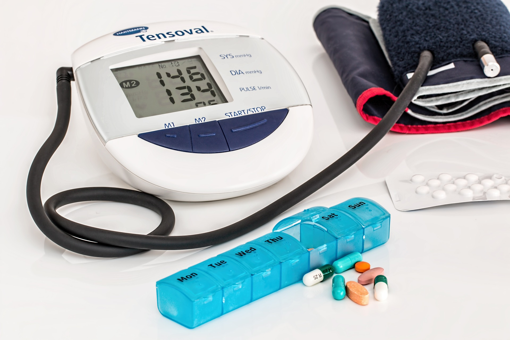
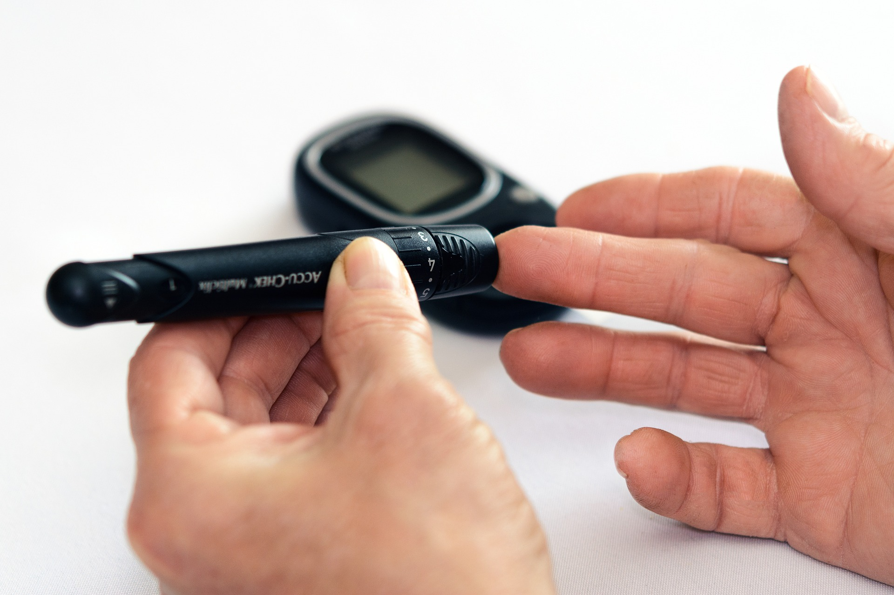

Our goal is to reach a fully aware
community with the diabetes
and how to deal with it.

Diabetes is a common disease of our time

With diabetes, your body doesn't make enough insulin or can't use it as well as it should

There isn't a cure yet for diabetes, but losing weight, eating healthy food, and being active can really help

And we can help so don't be late